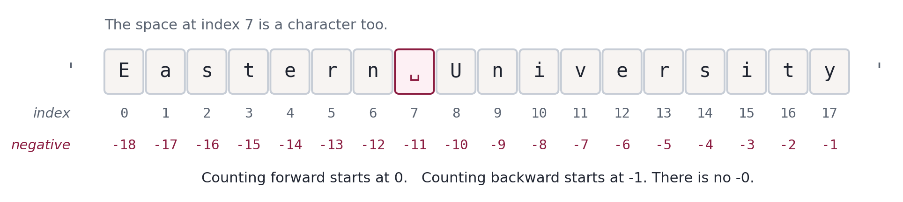
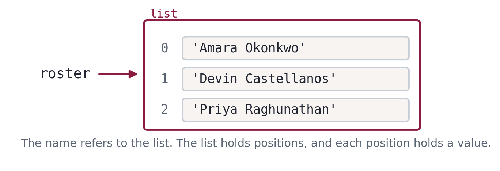
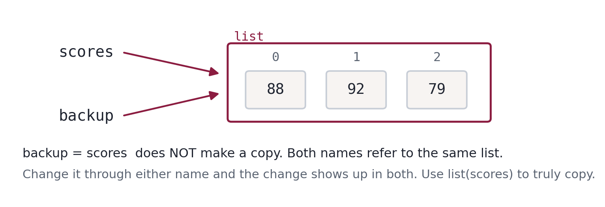
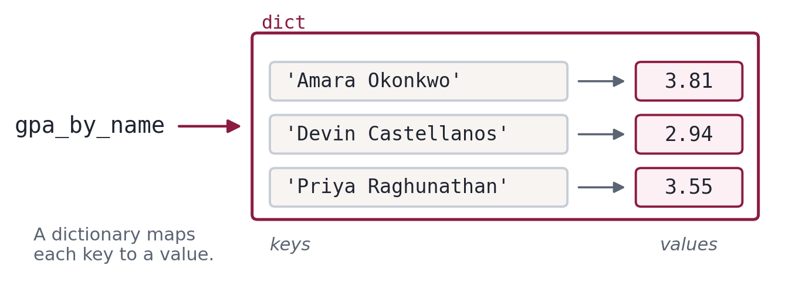

Getting Started
30 + 12Subtraction uses the minus sign, -:
43 - 1Multiplication uses the asterisk, * - not ×:
6 * 7And division uses the forward slash, /:
84 / 2Look closely at that last result: 42.0, not 42.
Python has two kinds of numbers. An integer (int) is a whole number. A floating-point number (float) can have a fractional part. Division always produces a float, even when the answer comes out even - because in general division can't be relied on to give a whole number, so Python doesn't pretend otherwise.
If you want a whole number back, use //, called floor division:
84 // 27 // 27 // 2 is 3, not 3.5 - floor division always rounds down, toward the floor. It throws away the remainder.
Often the remainder is exactly what you want, and for that there's the modulus operator, %:
7 % 2Both of these behave surprisingly on negative numbers
"Rounds down" means down, not "toward zero." Those are the same thing for positive numbers and different for negative ones.
7 // 2 is 3. What is -7 // 2? Is it -3 or -4? Commit to an answer before you run the next cell.
print(-7 // 2)
print(-7 % 2)What happened
-4 and 1, and both are worth a second look.
-7 / 2 is -3.5. Rounding down from there gives -4, because -4 is below -3.5 on the number line. If you expected -3 you were rounding toward zero, which is what most calculators do and what several other languages do.
The modulus is stranger: -7 % 2 is 1, not -1. In Python the sign of the result follows the divisor, not the dividend. One consequence is genuinely useful - n % 2 == 0 correctly identifies even numbers whether n is positive or negative, which is not true in every language.
You will not meet negative numbers often in this course. But when a count or an index comes out negative unexpectedly, this is a good place to look.
Modulus looks like a curiosity and turns out to be one of the most useful operators you'll meet. Here's the case that makes it click.
Berrios asks how much time a student spent on a task: 105 minutes. You'd like that as hours and minutes.
minutes = 105
minutes / 601.75 hours is correct but not how anyone says it. Use // for whole hours:
hours = minutes // 60
hoursAnd % for the minutes left over:
leftover = minutes % 60
leftoverSo: 1 hour and 45 minutes. Two operators, no arithmetic on your part.
Two more modulus tricks worth knowing, because they show up constantly:
# the last digit of a number
student_id = 1007
student_id % 10# is it even? even numbers have no remainder when divided by 2
14 % 215 % 2Finally, ** raises a number to a power:
7 ** 2Order of operations
When an expression has several operators, Python doesn't just work left to right. It follows the same precedence rules you learned in algebra: exponentiation first, then multiplication and division, then addition and subtraction.
6 + 6 ** 2 produce? Is it 144 or 42? Commit to an answer before you run the next cell.
6 + 6 ** 2What happened
42. The exponentiation happened first: 6 ** 2 is 36, then 6 + 36. If Python had worked strictly left to right you'd have gotten 12 ** 2, or 144.
Whitespace makes no difference to Python here - 6+6**2 gives the same answer. It's only for your eyes.
12 + 5 * 6Parentheses override precedence, and they're free. Use them whenever the order isn't obvious at a glance:
(12 + 5) * 6Arithmetic functions
Python also comes with functions. A function takes one or more values, does something with them, and hands a result back. When you use one, you are calling it, and the value in the parentheses is the argument.
round rounds a float to the nearest whole number:
round(42.4)round(42.6)abs gives the absolute value - the size of a number, ignoring its sign:
abs(-42)abs(42)Those parentheses aren't decoration. Leave one out and Python can't tell where the argument ends, so it gives up before running anything. That's a SyntaxError - the code isn't valid Python at all.
abs(-42Notice what the error message gives you: the line, a caret pointing at roughly where Python got confused, and the words SyntaxError: '(' was never closed. That last part is unusually helpful. Most of the time, Python's guess about where the problem is will be close but slightly after the real mistake - because Python only notices something is wrong once it hits something that can't possibly follow.
Your turn
Berrios logged a study session as 227 minutes. Print how many whole hours that is, and how many minutes are left over.
Use // and %. Two lines is plenty.
Show a worked solution
session = 227
print(session // 60, "hours and", session % 60, "minutes")Your turn
Here's an oddity worth knowing about. Run both cells below and compare.
round(42.5)round(43.5)42.5 rounds down to 42, but 43.5 rounds up to 44. That isn't a bug - Python rounds halves toward the nearest even number, a convention called banker's rounding that avoids a systematic upward bias when you round thousands of values.
This is a good first thing to ask an AI assistant: "Why does Python round 0.5 to even instead of always up?" Compare what it tells you to what you just observed.
Variables & Types
type(42)type(42.0)type('Amara Okonkwo')Three types, three uses:
int- a whole numberfloat- a number with a decimal pointstr- a string, meaning text (short for "string of characters")
The quotes are what make something a string. 42 is a number; '42' is text that happens to look like a number. Python treats them very differently.
type(42)type('42')Why the difference matters
A cohort file arrives from the registrar, and every value in it is text - that's just how files work. Suppose a GPA came through as the string '3.81' and you try to do arithmetic with it.
'126' / 3What happened
A TypeError. The message is worth reading closely: unsupported operand type(s) for /: 'str' and 'int'.
Python is telling you exactly what went wrong: the / operator doesn't know how to divide a str by an int. The values in an expression are called operands, which is where that wording comes from.
This error is not Python being difficult. It's Python refusing to guess. In a language that guesses, '126' / 3 might silently produce something wrong, and you'd find out three steps later.
The fix is to convert the string to a number first. int works as a function for exactly this:
int('126') / 3float does the same for values with a decimal point:
float('3.81')float('3.81') * 2Conversion goes the other way too. str turns a number into text:
str(42)And int on a float throws away the fractional part - it does not round:
int(42.9)A conversion trap
int converts a string of digits. It will not convert a string that looks like a float.
int('3.7')This one is a ValueError, not a TypeError, and the distinction is useful. A TypeError means wrong kind of thing. A ValueError means right kind of thing, but its content doesn't work - int accepts strings, this just isn't a string it can parse.
If you meant to get 3, convert to float first, then to int:
int(float('3.7'))The comma trap
Write a large number the way you'd write it on paper and Python will not complain - which is exactly what makes this dangerous.
1,000,000 in a variable and print it? Commit to an answer before you run the next cell.
population = 1,000,000
print(population)
print(type(population))What happened
Not a number at all - (1, 0, 0), of type tuple.
In Python, commas separate values, so 1,000,000 is three separate integers - 1, 0, and 0 - bundled into something called a tuple. No error, no warning, and every calculation downstream is quietly wrong.
This is the worst kind of bug: the silent kind. If you need a thousands separator for readability, Python accepts underscores instead.
1_000_0001_000_000 + 1Your turn
Below are eight expressions. For each one, write down your guess for the type before running anything, then use type() to check.
765
2.718
'2 pi'
abs(-7)
abs(-7.0)
abs
int
typeThe last three are the interesting ones. What is the type of a function itself?
Show a worked solution
print(type(765)) # int
print(type(2.718)) # float
print(type('2 pi')) # str -- quotes make it text, whatever is inside
print(type(abs(-7))) # int -- abs of an int is an int
print(type(abs(-7.0))) # float -- abs of a float is a float
print(type(abs)) # builtin_function_or_method
print(type(int)) # type
print(type(type)) # type
# The last three are the interesting ones. Functions and types are themselves
# values, which is why you can pass them around like any other value. That
# idea comes back in Module 4, where you hand functions to pandas.credits_earned = 124Notice: no output. This is an assignment statement, and a statement performs an action rather than producing a value. It has three parts - the variable name on the left, the = assignment operator, and an expression on the right.
The value is now stored under that name. Ask for the name and you get the value:
credits_earnedA variable can hold any type. Here's a float and a string:
ug_gpa = 3.81
major = 'Biology'majorOnce a variable exists, you can use it anywhere you'd use the value itself:
credits_earned + 6ug_gpa * 2Including as an argument to a function:
round(ug_gpa)Reassignment
A variable's value can change. Assign to the same name again and the old value is simply gone.
attempts = 1
attempts = 2
attemptsThis is worth pausing on, because the = sign is misleading. In mathematics, = asserts that two things are equal. In Python, = is an instruction: take the value on the right and store it under the name on the left. It's an action, not a claim.
Which is why this works, and would be nonsense in algebra:
count after these two lines? Commit to an answer before you run the next cell.
count = 5
count = count + 3
countWhat happened
8. Python evaluates the right side first - count + 3 is 5 + 3, or 8 - and then stores that result back under the name count. The old value of 5 is overwritten in the process.
Read = as "gets" rather than "equals" and this stops being confusing: count gets count + 3.
Adding to a variable is common enough that Python has a shorthand. These two lines do the same thing:
count = count + 3
count += 3count = 5
count += 3
countcount -= 2
countcount *= 10
countYou'll see += constantly once we get to loops, where it's how you accumulate a running total.
Variable names
Names can contain letters, digits, and underscores, but they cannot start with a digit and cannot contain spaces or punctuation. Break those rules and you get a SyntaxError.
million! = 100000076trombones = 'big parade'There's a third category of illegal name that's less obvious. Some words are keywords - words Python reserves for the structure of the language itself. You can't use them as variable names.
class = 'Introduction to Data Science'False = 6class is a keyword because Python uses it to define a class (Module 5 territory). False is a built-in constant. There are about thirty-five of these, and you don't need to memorize them - your editor will color them differently, which is warning enough.
If you're curious, Python will list them:
import keyword
print(keyword.kwlist)
print(len(keyword.kwlist), 'keywords')Naming style
Legal is a low bar. The convention in Python - and it is a strong one - is lowercase_with_underscores for variables, and names that say what the thing is:
x = 3.81 # legal, useless
g = 3.81 # legal, still useless
ug_gpa = 3.81 # good
undergraduate_gpa = 3.81 # also fine, if a little longYou will spend far more time reading code than writing it, including your own code six months from now. ug_gpa costs you four extra keystrokes and saves you a minute of puzzling every time you come back to it.
Comments
A comment starts with #. Python ignores everything from the # to the end of the line.
# minutes a student spent on task, across the whole term
time_on_task = 9.5Comments can also sit at the end of a line of code:
attendance = 0.96 # proportion of classes attended, 0 to 1A comment that restates the code is noise:
gpa = 3.81 # assign 3.81 to gpaA comment that supplies what the code can't say is valuable:
gpa = 3.81 # on the 4.0 scale; transfer credits excludedUnits, scales, assumptions, and the reason you did something the odd way - those are what comments are for.
Your turn
Make some errors on purpose. For each of these, predict what happens, then try it in the cell below. You'll need to run them one at a time.
17 = n- we known = 17is fine. Is the reverse?x = y = 1- does chained assignment work?- Put a semicolon at the end of a statement:
n = 17; - Put a period at the end:
n = 17. - Misspell a module name:
import maath
Number 4 is sneakier than it looks. Check the type of what you get.
Show a worked solution
# 1. SyntaxError -- cannot assign to literal. Assignment goes right to left.
# 2. Works. Both x and y become 1.
# 3. Works. Python allows a trailing semicolon; it just does nothing.
# (In a notebook, a trailing semicolon also suppresses cell output.)
# 4. No error! 17. is a valid float literal, the same as 17.0.
# 5. ModuleNotFoundError -- a different error type, covered in section 10.
x = y = 1
print(x, y)
n = 17.
print(n, type(n))Strings
raw_name = " amara OKONKWO "
raw_nameNote what the output shows you: ' amara OKONKWO ', quotes included. Those quotes aren't part of the value - they're Python showing you where the string starts and ends, which is the only way you'd see the leading and trailing spaces.
A string is a sequence of characters in quotes. Single or double quotes both work and mean exactly the same thing:
'Eastern University'"Eastern University"Having both is genuinely useful, because it lets you put one kind of quote inside the other. A name with an apostrophe breaks single quotes:
advisor = 'Berrios' office'Python read 'Berrios' as a complete string, then found a stray office' it couldn't make sense of. Two ways out. Use double quotes on the outside:
advisor = "Berrios' office"
advisorOr escape the apostrophe with a backslash, which tells Python the next character is data, not syntax:
advisor = 'Berrios\' office'
advisorText without quotes isn't text at all - Python reads it as a variable name. Two words with a space between them isn't a legal name, so this one fails before it runs:
name = amara okonkwoRemove the space and it becomes legal syntax - but there's still no variable called amara, so now you get a different error:
name = amaraTwo errors, one root cause: missing quotes. Worth internalizing, because it's the mistake that produces the most confusing beginner errors.
Length, joining, repeating
len counts the characters in a string:
len('Eastern University')Eighteen - the space counts. len counts what's between the quotes, not the quotes themselves.
The + operator joins strings end to end. This is called concatenation:
'Eastern' + ' ' + 'University'Note that you have to supply the space yourself. And * repeats a string:
'-' * 40Which is a cheap way to draw a divider in a report. The other arithmetic operators don't work on strings:
'Eastern' - 'East'Indexing
A string is a sequence, meaning its characters are in a definite order and each one has a numbered position called an index. You get a single character with square brackets.

university = 'Eastern University'
university[0]Indexing starts at zero. university[0] is the first character, not the second. This trips up everyone at first, and it is the single most common off-by-one mistake in programming. Zero-based indexing is worth getting into your bones now, because lists, arrays, and DataFrames all work the same way.
university[6]university[7]Index 7 is the space. Spaces are characters like any other - a fact that matters a great deal when you're cleaning data.
Negative indices count from the end, which saves you from computing the length first:
university[-1]university[-2]university[-0] give you? Commit to an answer before you run the next cell.
university[-0]What happened
'E' - the first character, not the last.
There is no -0. Zero and negative zero are the same number, so [-0] is just [0]. Counting forward starts at 0; counting backward starts at -1. The asymmetry is annoying but you only have to learn it once.
Ask for an index that doesn't exist and you get an IndexError:
university[18]The valid indices for an 18-character string are 0 through 17. 18 is one past the end - which is exactly why the error type has its own name.
Slicing
A slice is a range of characters. The syntax is [start:stop], and the character at stop is not included.
university[0:7]Seven characters - indices 0 through 6. The stop index is exclusive.
That sounds like a design mistake and isn't: it means stop - start is exactly the length of the slice, and it means [0:7] and [7:18] fit together with no overlap and no gap.
university[8:18]Leave out the start and the slice runs from the beginning:
university[:7]Leave out the stop and it runs to the end:
university[8:]Leave out both and you get the whole thing - which looks pointless now but becomes useful with lists:
university[:]f-strings
Here is the feature you will use more than any other in this notebook.
Building output by concatenation gets ugly fast, and it breaks the moment a number is involved, because you can't concatenate a str and an int:
name = 'Amara Okonkwo'
gpa = 3.81
'Student ' + name + ' has GPA ' + gpaAn f-string solves this. Put an f before the opening quote, and then anything inside curly braces {} is evaluated as Python and dropped into the text.
f"Student {name} has GPA {gpa}"No conversion needed, no manual spaces, and you can read it. Any expression works inside the braces, not just a variable name:
f"{name} needs {124 - 118} more credits."f"Rounded GPA: {round(gpa, 1)}"You can also control formatting after a colon. :.2f means "as a float with 2 decimal places," which matters when you're reporting numbers to a Cabinet that will notice 3.8100000000000005.
f"GPA to two places: {gpa:.2f}"attendance = 0.9612
f"Attendance: {attendance:.1%}"From here on, this notebook uses f-strings for essentially all output. Older code uses % formatting or .format(); you'll recognize them when you see them, and you don't need to write them.
String methods
A method is a function that belongs to a value. You call it with a dot after the value: value.method(). Strings come with a lot of them, and the cleaning ones are what Berrios needs.
Back to our messy record:
raw_name.strip() removes whitespace from both ends. Only the ends - it will not touch anything in the middle of a string. That matters more than it sounds like it does, and it comes back to bite us in section 8.
raw_name.strip().lower() and .upper() change case:
raw_name.lower().title() capitalizes the first letter of each word - which is what a name field wants:
raw_name.strip().title()That line chains two methods: .strip() hands back a string, and .title() is then called on that string. Reading left to right is reading the order of operations, which makes chains easy to follow once you notice.
One thing to be clear about: string methods never modify the original.
print(f"cleaned: {raw_name.strip().title()}")
print(f"original: {raw_name}")raw_name is unchanged. Strings are immutable - they cannot be altered in place. Methods hand back a new string, and if you want to keep it, you have to assign it to something.
clean_name = raw_name.strip().title()
clean_name.split() breaks a string into a list of pieces, splitting on whitespace by default:
clean_name.split()Those square brackets mean you've got a list - the subject of section 7. For now, note that splitting a full name gives you the parts separately:
parts = clean_name.split()
print(parts[0])
print(parts[1]).split() takes an optional argument, the delimiter, for when the separator isn't a space. CSV files are the obvious case:
row = '1001,Amara Okonkwo,Biology'
row.split(',').join() is the reverse - it glues pieces back together with a separator of your choosing:
' | '.join(['1001', 'Amara Okonkwo', 'Biology'])The string you call .join() on is the glue, which reads backwards until you've done it a few times. And .replace() swaps one substring for another:
'MS Data Science'.replace('MS', 'Master of Science')Methods belong to types
Methods aren't universal. .upper() is a string method, so a number doesn't have it.
gpa = 3.81
gpa.upper()An AttributeError means this value has no such thing attached to it. Read it as "a float doesn't know how to do upper."
This is the error you get most often when a variable holds something other than what you assumed - which, in data work, is most of the time. When you see an AttributeError, the useful question isn't "what's wrong with this method," it's "what type is my variable actually?" Check with type().
To see everything a string can do, dir() will list the methods (ignore the ones starting with underscores):
print(dir(str))Ignore everything starting with underscores - those are internal. You don't need to know the rest of that list either. You need to know that it exists, and that help(str.strip) will explain any single item on it.
help(str.strip)Your turn
Berrios needs names formatted as "Okonkwo, Amara" for an alphabetical roster.
Starting from raw_name, produce that string. You'll need .strip(), .title(), .split(), indexing, and an f-string.
Do it in as many steps as you like - clarity beats cleverness.
Show a worked solution
raw_name = " amara OKONKWO "
clean = raw_name.strip().title()
parts = clean.split()
first = parts[0]
last = parts[1]
print(f"{last}, {first}")
# Or, once you trust yourself, in one line:
print(f"{raw_name.strip().title().split()[1]}, {raw_name.strip().title().split()[0]}")
# The one-liner works but is harder to debug. The version above is better code.Your turn
Predict, then check: what does each of these produce? One of them raises an error - which, and why?
'Eastern'[2:5]
'Eastern'[-3:]
'Eastern'[5:2]
'Eastern'[0] + 'Eastern'[-1]
'Eastern'.strip('n')
len('Eastern'[3:])
'Eastern' + 7Show a worked solution
print('Eastern'[2:5]) # 'ste'
print('Eastern'[-3:]) # 'ern'
print('Eastern'[5:2]) # '' -- empty, not an error. Start after stop.
print('Eastern'[0] + 'Eastern'[-1]) # 'En'
print('Eastern'.strip('n')) # 'Easter' -- strip takes an optional set of
# characters to remove, not just whitespace
print(len('Eastern'[3:])) # 4
# 'Eastern' + 7 is the TypeError -- you cannot concatenate str and int.
# Fix it with an f-string or str(7).Functions
def show_commission():
print("Institutional Research - Academic Success Report")
print("Prepared for the University Cabinet")No output. Defining a function doesn't run it - it just stores the instructions under a name, the same way an assignment stores a value.
Look at the anatomy:
defis the keyword that starts a function definition.show_commissionis the name. Any legal variable name is a legal function name.- The empty parentheses
()mean this function takes no inputs. - The first line is the header and it must end with a colon.
- The indented lines below are the body.
Indentation is syntax in Python. In most languages, indenting is a courtesy to readers; in Python it's how the language knows which lines belong to the function. Four spaces is the universal convention. Be consistent - mixing tabs and spaces produces errors that are genuinely hard to see.
Now call it. Parentheses are what trigger the call:
show_commission()show_commission with no ()? Commit to an answer before you run the next cell.
show_commissionWhat happened
Not the output - a description of the function object itself.
Without parentheses you're referring to the function as a value, the same way gpa refers to a number. With parentheses you're telling Python to run it. This distinction shows up again in Module 4, where you hand functions to pandas as arguments without calling them.
Parameters
A function that always does the same thing has limited use. A parameter is a variable in the header that receives a value when the function is called.
def print_heading(text):
print(text)
print("=" * len(text))print_heading("Cohort Summary")
print_heading("Engagement")One definition, different output each time.
Two words that get used loosely and shouldn't be:
- a parameter is the name in the function definition (
text) - an argument is the actual value you pass in (
"Cohort Summary")
The parameter is the slot; the argument is what you put in it. Error messages use both words precisely, so it pays to know which is which.
You can pass a variable as the argument - the value gets handed over, and the parameter name inside the function is unrelated to the variable name outside:
report_title = "Term Report"
print_heading(report_title)Give the wrong number of arguments and you get a TypeError, with a message that names the function and counts the arguments for you:
print_heading()print_heading("Cohort", "Summary")Return values - the important distinction
This is the concept students most often get halfway. Take it slowly.
print puts text on the screen for a human to read. return hands a value back to the program so it can be used. They are not alternatives to each other; they do different jobs.
Here is a function that prints:
def show_letter_grade(gpa):
if gpa >= 3.5:
print("A")
else:
print("B or below")show_letter_grade(3.81)Looks like it works. Now try to use the result:
result be after result = show_letter_grade(3.81)? What will its type be? Commit to an answer before you run the next cell.
result = show_letter_grade(3.81)
print(f"result is {result}, of type {type(result)}")What happened
result is None.
The function printed "A" as a side effect, then ended without returning anything - and a function that returns nothing returns None, a special value meaning "no value at all." The text went to the screen, where you can read it but your program can't.
None showing up unexpectedly almost always means this: a function printed when it should have returned.
Same logic, with return:
def letter_grade(gpa):
if gpa >= 3.5:
return "A"
else:
return "B or below"result = letter_grade(3.81)
print(f"result is {result!r}, of type {type(result)}")Now the value is in your hands. You can store it, test it, put it in an f-string, or feed it to another function:
print_heading(letter_grade(3.81))Rule of thumb: functions should return, not print. A function that returns can always be printed by whoever calls it. A function that prints can never be un-printed. Printing is a decision about presentation, and it belongs at the edge of your program, not buried in the middle of it.
You will violate this rule sometimes - print_heading above prints, and that's fine because presentation is literally its job. The point is to violate it on purpose.
One more thing about return: it ends the function immediately. Anything after it never runs.
def area(radius):
return 3.14159 * radius ** 2
print("This line is unreachable.")
area(3)No printed message - return exited before reaching it. Unreachable code after a return is a common symptom of a half-finished edit.
Local variables
Variables created inside a function are local: they exist while the function runs and then they're gone.
def normalized_engagement(logins, hours):
login_score = logins / 20
hour_score = hours / 15
return (login_score + hour_score) / 2
normalized_engagement(14, 9.5)login_scorelogin_score was never visible outside the function. This is a feature, not a limitation - it means you can write a function without worrying about whether one of its variable names collides with something elsewhere in a 200-line notebook.
Docstrings
A docstring is a string on the first line of a function body. It documents what the function does, and Python wires it into the help system automatically.
def normalized_engagement(logins, hours):
"""Return a 0-1 engagement score from weekly logins and hours on task.
logins -- logins per week, where 20 is treated as a full score
hours -- hours on task per week, where 15 is a full score
"""
login_score = logins / 20
hour_score = hours / 15
return (login_score + hour_score) / 2help(normalized_engagement)Write docstrings for anything you'll use more than once. Three months from now you are a different person with no memory of this code, and help() is how you'll talk to your past self.
The same help() works on anything, which is the fastest way to answer "what arguments does this take again?":
help(round)In Jupyter and Colab, ?round does the same thing in a popup, and round? works too. Use whichever you'll remember.
Default arguments
A parameter can have a default value, which makes it optional to supply.
def letter_grade(gpa, honors_cutoff=3.5):
"""Return 'A' if gpa meets the cutoff, else 'B or below'."""
if gpa >= honors_cutoff:
return "A"
else:
return "B or below"
print(letter_grade(3.6)) # uses the default 3.5
print(letter_grade(3.6, honors_cutoff=3.7)) # overrides itThat second call names the argument explicitly - a keyword argument. Worth doing whenever a bare value wouldn't be self-explanatory. letter_grade(3.6, 3.7) is legal and tells the reader nothing.
Your turn
Write a function convert_to_celsius that takes a Fahrenheit temperature and returns the Celsius equivalent:
$$C = (F - 32) \times \frac{5}{9}$$
Give it a docstring. Then uncomment the tests to check it.
Show a worked solution
def convert_to_celsius(fahrenheit):
"""Return the Celsius equivalent of a Fahrenheit temperature."""
return (fahrenheit - 32) * 5 / 9# Uncomment once your function is written.
# print(convert_to_celsius(32)) # expected 0.0
# print(convert_to_celsius(212)) # expected 100.0
# print(convert_to_celsius(98.6)) # expected 37.0 (approximately)Your turn
Write clean_name(raw) that takes a messy name string and returns it stripped and title-cased. This is the function you'll use on the whole cohort in section 8, so get it right here where there's only one value to think about.
Then write roster_name(raw) that returns "Last, First" - and have it call clean_name rather than repeating the cleaning logic. Functions calling functions is the whole point.
Show a worked solution
def clean_name(raw):
"""Return a name stripped of surrounding whitespace and title-cased."""
return raw.strip().title()
def roster_name(raw):
"""Return a name as 'Last, First' for an alphabetical roster."""
parts = clean_name(raw).split()
return f"{parts[-1]}, {parts[0]}"
print(clean_name(" devin castellanos "))
print(roster_name(" devin castellanos "))
# parts[-1] rather than parts[1] so a middle name doesn't break it.Conditions
3.81 == 3.813.81 == 2.94type(True)bool is a type with exactly two values, True and False. Capitalized, no quotes - true is a NameError and 'True' is a string.
**= and == are different operators and confusing them is a rite of passage.** = assigns a value. == compares two values. Using = where a comparison belongs is a SyntaxError:
gpa = 3.81
if gpa = 3.5:
print('yes')Python's message here is unusually kind: "Maybe you meant '==' or ':=' instead of '='?" Ignore the := suggestion for now.
The full set of relational operators:
gpa = 3.81
cutoff = 3.5
print(gpa == cutoff) # equal to
print(gpa != cutoff) # not equal to
print(gpa > cutoff) # greater than
print(gpa < cutoff) # less than
print(gpa >= cutoff) # greater than or equal to
print(gpa <= cutoff) # less than or equal toLogical operators
Three operators combine boolean expressions: and, or, not.
and is True only if both sides are True:
gpa = 3.81
credits = 124
gpa >= 3.5 and credits >= 120or is True if either side is (or both):
gpa >= 3.9 or credits >= 120not flips a boolean:
not gpa >= 3.5gpa is 3.81 and credits is 124. What does gpa >= 3.9 and credits >= 120 or gpa >= 3.5 give? Commit to an answer before you run the next cell.
gpa >= 3.9 and credits >= 120 or gpa >= 3.5What happened
True - but if you had to think hard about why, that's the lesson.
and binds more tightly than or, so Python reads it as (gpa >= 3.9 and credits >= 120) or (gpa >= 3.5). The first group is False, the second is True, so the or is True.
Correct, and unreadable. Add the parentheses even when you don't need them - the next person to read this, including you, shouldn't have to remember an operator precedence table.
if statements
The if statement runs a block of code only when a condition is true. The structure is the same shape as a function definition: header ending in a colon, indented body.
gpa = 3.81
if gpa >= 3.5:
print("Dean's list")Change the value and the block is skipped entirely - no output, no error:
gpa = 2.94
if gpa >= 3.5:
print("Dean's list")else supplies the alternative:
gpa = 2.94
if gpa >= 3.5:
print("Dean's list")
else:
print("Not on the Dean's list")Exactly one of those two branches runs, always. The if and the else are two paths through the same fork.
Chained conditionals
Real classification has more than two outcomes, and elif - short for "else if" - handles the middle cases.
def standing(gpa):
"""Return a student's academic standing from their GPA."""
if gpa >= 3.5:
return "excellent"
elif gpa >= 3.0:
return "good"
elif gpa >= 2.0:
return "satisfactory"
else:
return "at risk"
print(standing(3.81))
print(standing(3.02))
print(standing(2.60))
print(standing(1.90))You can have as many elif branches as you need, and the else is optional. Python checks the conditions top to bottom and stops at the first one that's true - which is why the order matters enormously.
Notice standing(3.81) returns "excellent" even though 3.81 >= 3.0 is also true. The first match wins and the rest are never evaluated.
The mistake everyone makes
These two functions look nearly identical. They behave completely differently. This is the most important cell in the section.
def standing_elif(gpa):
if gpa >= 3.5:
return "excellent"
elif gpa >= 3.0:
return "good"
elif gpa >= 2.0:
return "satisfactory"
else:
return "at risk"
def standing_if(gpa):
if gpa >= 3.5:
print("excellent")
if gpa >= 3.0:
print("good")
if gpa >= 2.0:
print("satisfactory")
else:
print("at risk")standing_if(3.81) print? How many lines? Commit to an answer before you run the next cell.
print("--- elif version ---")
print(standing_elif(3.81))
print("--- if version ---")
standing_if(3.81)What happened
The if version prints three lines: excellent, good, and satisfactory.
Separate if statements are independent questions. Python asks all three, and 3.81 satisfies all three, so all three bodies run. A chain of elif is one question with several possible answers - at most one body runs.
Worse, look at that else. It's attached only to the last if, so it fires whenever gpa < 2.0, regardless of the earlier branches. Try standing_if(1.5) and you'll get at risk alone, which happens to be right. Try it on a value where the branches disagree and the logic falls apart.
**When your conditions are mutually exclusive alternatives, you want elif.** Separate if statements are for genuinely independent checks.
standing_if(1.5)Using modulus in a condition
Back in section 1 you used % to get remainders. Combined with ==, it's how you test divisibility.
def parity(n):
"""Return 'even' or 'odd' for an integer."""
if n % 2 == 0:
return "even"
else:
return "odd"
print(parity(1004))
print(parity(1007))n % 2 == 0 reads as "the remainder when n is divided by 2 equals zero," which is the definition of even. The same pattern with other divisors tests for any multiple: n % 5 == 0, n % 100 == 0.
Placeholders
Python won't accept an empty block. If you know you need a branch but haven't written it yet, pass does nothing, legally.
gpa = 3.81
if gpa >= 3.5:
print("Dean's list")
else:
pass # TODO: decide whether to flag these for advising outreachTODO in a comment is a widely-used convention, and most editors will highlight it and let you list every one in a project. Leave yourself notes.
Your turn
Write flag_for_outreach(gpa, logins_per_week) that returns True if a student should be flagged for advising outreach, False otherwise.
Flag a student if either:
- their GPA is below 3.0, or
- they log in fewer than 8 times per week
Then uncomment the tests.
Show a worked solution
def flag_for_outreach(gpa, logins_per_week):
"""Return True if a student meets either outreach trigger."""
return gpa < 3.0 or logins_per_week < 8A boolean expression is a boolean value, so there is never any need to write
if gpa < 3.0 or logins < 8:
return True
else:
return Falsereturn gpa < 3.0 or logins < 8 produces exactly the same result and is easier to read. If you find yourself returning True in one branch and False in the other, you can almost always return the condition itself.
# Uncomment once your function is written.
# print(flag_for_outreach(3.81, 14)) # expected False
# print(flag_for_outreach(2.94, 6)) # expected True
# print(flag_for_outreach(3.88, 4)) # expected True (engagement trigger)
# print(flag_for_outreach(2.60, 13)) # expected True (GPA trigger)Your turn
Predict the output of each, then run them. The third one is the interesting case - think about what elif guarantees.
x = 5
if x > 0:
print("positive")
if x > 3:
print("big")
if x > 0:
print("positive")
elif x > 3:
print("big")
if x > 3:
print("big")
elif x > 0:
print("positive")Show a worked solution
x = 5
# Block 1 prints BOTH "positive" and "big" -- two independent ifs.
# Block 2 prints ONLY "positive".
# Block 3 prints ONLY "big".**In an elif chain, put the most specific condition first.**
Block 2 above prints only positive, and its big branch is unreachable for every positive value of x - the first condition always matches, so Python never evaluates the second. That is a silent bug: no error, just a branch that can never run.
Block 3 gets the same conditions right by ordering them from most restrictive to least. This is exactly why standing() checks >= 3.5 before >= 3.0. When you write an elif chain, read it top to bottom and ask whether any branch is unreachable.
Data Structures
roster = [
" amara OKONKWO ",
"devin castellanos",
"Priya Raghunathan ",
"MARCUS WEBB",
"Sofia Marchetti",
" tobias lindqvist",
"Nadia Haddad",
"elliot PARK ",
"Rosalind Achebe",
"JIAN-WEI CHEN",
]No output - that's an assignment. Ask for the name to see it:
rosterlen gives the number of elements, exactly as it did for strings:
len(roster)And here are the corresponding undergraduate GPAs, in the same order:
ug_gpas = [3.81, 2.94, 3.55, 3.02, 3.71, 2.60, 3.88, 3.34, 3.49, 3.92]
len(ug_gpas)Two lists, matched by position: roster[0] and ug_gpas[0] describe the same student. This "parallel lists" arrangement works and is also fragile - sort one without the other and the data is silently corrupted. Section 9 shows a better structure, and Module 4 shows the right one.
Indexing and slicing
Everything you learned about string indexing applies unchanged. Zero-based, negative indices count from the end, slices exclude the stop.

roster[0]roster[-1]ug_gpas[0:3]roster[10]Ten elements means valid indices 0 through 9. roster[10] is one past the end - the same off-by-one you met with strings, and the reason len(roster) - 1 is the last valid index.
Lists are mutable
Here's where lists differ from strings in a way that matters. Strings are immutable - no method changes one in place. Lists are mutable: you can assign to a position and change the list itself.
scores = [88, 92, 79]
scores[0] = 95
scoresTry the equivalent on a string and Python refuses:
name = 'Amara'
name[0] = 'X'That TypeError - 'str' object does not support item assignment - is Python saying strings are immutable. It's a distinction you'll rely on later: mutability is why a list can be built up piece by piece, and immutability is why a string is safe to pass around without worrying that something will change it.
Growing a list
.append() adds one element to the end. Note that it modifies the list in place and returns nothing:
scores = [88, 92, 79]
scores.append(93)
scores.extend() adds all the elements of another list:
scores.extend([85, 91])
scoresNow the contrast that catches everyone. What if you append a list instead of extending?
scores has 6 elements. After scores.append([70, 75]), what is len(scores)? Commit to an answer before you run the next cell.
scores = [88, 92, 79, 93, 85, 91]
scores.append([70, 75])
print(scores)
print(f"length: {len(scores)}")What happened
Length 7, not 8.
.append() adds one element, and that one element happens to itself be a list. You get a nested list: six numbers and then a list sitting in position
- Look at the output and you can see the inner brackets.
.extend() unpacks; .append() wraps. When a "sum" or "mean" calculation suddenly fails with a TypeError about lists and ints, this is usually why.
scores[6]scores[6][0]scores[6] is a list, so scores[6][0] reaches inside it. Double brackets are your signal that something is nested.
Removing things
.pop() removes an element by index and returns it:
letters = ['a', 'b', 'c', 'd']
removed = letters.pop(1)
print(f"removed {removed!r}, list is now {letters}").remove() deletes by value rather than position, and returns nothing:
letters = ['a', 'b', 'c', 'd']
letters.remove('c')
lettersAsk it to remove something that isn't there and you get a ValueError - right type of argument, wrong content:
letters.remove('z')Testing membership
The in operator asks whether a value appears in a list. It returns a boolean, so it drops straight into an if.
'Nadia Haddad' in roster'Jamie Berrios' in rosterSummarizing a list
Four built-in functions do most of what you'll want. sum, min, max, and len - and with those four you can compute a mean.
print(f"sum: {sum(ug_gpas)}")
print(f"min: {min(ug_gpas)}")
print(f"max: {max(ug_gpas)}")
print(f"mean: {sum(ug_gpas) / len(ug_gpas):.3f}")sorted returns a new list in order, leaving the original alone:
print(sorted(ug_gpas))
print(ug_gpas)The original is untouched. If you want to keep the sorted version, assign it:
ranked = sorted(ug_gpas, reverse=True)
ranked[:3]reverse=True sorts high to low, so slicing the first three gives the top three GPAs. sorted works on strings too, alphabetically:
sorted(['Nadia Haddad', 'Amara Okonkwo', 'Elliot Park'])Copying, and a trap
This is subtle, it bites hard, and it comes directly from the fact that lists are mutable.
backup = scores and then scores.append(999), what is len(backup)? Commit to an answer before you run the next cell.
scores = [88, 92, 79]
backup = scores
scores.append(999)
print(f"scores: {scores}")
print(f"backup: {backup}")What happened
backup changed too.
backup = scores did not copy the list. It gave the same list a second name. Both names refer to one object in memory, so a change made through either name is visible through both. This is called aliasing.

To make a real copy, use list() or a full slice:
scores = [88, 92, 79]
real_copy = list(scores) # or scores[:]
scores.append(999)
print(f"scores: {scores}")
print(f"real_copy: {real_copy}")This is the reason to be careful with mutable values in general, and it's worth remembering when a DataFrame in Module 4 changes when you didn't expect it to. Same idea, bigger object.
Lists can hold anything
Elements don't have to share a type, and lists can contain lists:
mixed = ['1001', 'Amara Okonkwo', 3.81, True, ['Biology', 'Chemistry']]
print(type(mixed[0]))
print(type(mixed[2]))
print(type(mixed[3]))
print(type(mixed[4]))That flexibility is convenient and, in data work, usually a warning sign - a column where the types vary is a column that will break something. One of the first things NumPy does in Module 3 is take that flexibility away, on purpose.
Lists and strings
.split() turns a string into a list, which you saw in section 4. .join() turns a list back into a string, and it's how you build readable output:
row = "1001,Amara Okonkwo,Biology,3.81"
fields = row.split(",")
print(fields)
print(" | ".join(fields))Your turn
Using ug_gpas:
- Print the highest and lowest GPA.
- Print the mean, rounded to two decimal places, using an f-string.
- Print the top three GPAs, highest first.
- Print how many students have a GPA of at least 3.5. (You can do this with
sortedand a slice - no loop needed yet. A loop would be cleaner, and that's section 8.)
Show a worked solution
print(f"highest: {max(ug_gpas)}")
print(f"lowest: {min(ug_gpas)}")
print(f"mean: {sum(ug_gpas) / len(ug_gpas):.2f}")
print(f"top 3: {sorted(ug_gpas, reverse=True)[:3]}")
# Counting, without a loop yet: sort descending and read off where the
# cutoff falls. Clumsy on purpose -- section 8 does this properly.
ranked = sorted(ug_gpas, reverse=True)
print(f"ranked: {ranked}")
print("3.5 or above: 5 -- count them in the sorted list above")
# If that felt like cheating, good. Counting is what loops are for.gpa_by_name = {
"Amara Okonkwo": 3.81,
"Devin Castellanos": 2.94,
"Priya Raghunathan": 3.55,
}
gpa_by_nameCurly braces, and each item is a key: value pair separated by a colon. Look it up with square brackets - the same syntax as a list, but with a key instead of a position:

gpa_by_name["Priya Raghunathan"]No searching, no position tracking. And unlike parallel lists, the pairing can't come apart.
Numeric indices don't work, because a dictionary has no order to index into:
gpa_by_name[0]A KeyError means the key isn't in the dictionary - and 0 isn't a key here. You'd get the same error asking for a student who isn't in the cohort:
gpa_by_name["Jamie Berrios"].get() and missing data
A KeyError stops your program. When you're not certain a key exists - which, with real data, is always - .get() returns None instead of raising:
print(gpa_by_name.get("Jamie Berrios"))
print(gpa_by_name.get("Amara Okonkwo"))Or supply your own fallback as a second argument:
gpa_by_name.get("Jamie Berrios", "not enrolled")This becomes important in Module 4. Real cohort data has holes, and whether you crash, skip, or substitute on a missing value is an analytical decision with consequences - not a technicality.
Changing a dictionary
Dictionaries are mutable. Assign to a key that doesn't exist and it's added:
gpa_by_name["Marcus Webb"] = 3.02
gpa_by_nameAssign to a key that does exist and the old value is replaced - no warning, no error:
gpa_by_name["Marcus Webb"] = 3.05
gpa_by_namedel removes an item:
del gpa_by_name["Marcus Webb"]
gpa_by_namelen counts items, and in tests for a key:
print(len(gpa_by_name))
print("Amara Okonkwo" in gpa_by_name)3.81 is one of the values. What does 3.81 in gpa_by_name return? Commit to an answer before you run the next cell.
3.81 in gpa_by_nameWhat happened
False. **in checks keys, not values.**
This is a genuine gotcha, and the fix is to say what you mean - ask for the values explicitly with .values().
3.81 in gpa_by_name.values()Keys, values, items
Three methods give you the parts of a dictionary.
print(gpa_by_name.keys())
print(gpa_by_name.values())
print(gpa_by_name.items()).items() gives you key-value pairs. Look at how they print: [('Amara Okonkwo', 3.81), ...]. Those are tuples, the same thing enumerate handed you in section 8 - which is why the same two-name unpacking works on them.
Looping over a dictionary
Loop over a dictionary directly and you get the keys:
for name in gpa_by_name:
print(name)Loop over .values() for the values:
for gpa in gpa_by_name.values():
print(gpa)And .items() for both at once - this is the one you'll reach for most:
for name, gpa in gpa_by_name.items():
print(f"{name:22} {gpa:.2f}")That two-variable unpacking is the same mechanic as enumerate.
Counting with a dictionary
Here is the pattern that makes dictionaries indispensable. You have a list of majors, some repeated, and you want a count of each.
majors = ["Biology", "Business", "Mathematics", "Psychology", "Economics",
"Communications", "Computer Science", "Sociology", "Chemistry",
"Engineering"]
fields = ["Science", "Business", "Science", "Social Science", "Business",
"Humanities", "Science", "Social Science", "Science", "Science"]
counts = {}
for field in fields:
if field in counts:
counts[field] += 1
else:
counts[field] = 1
countsWalk through the logic: for each field, if it's already a key, add one to its count; if not, create it with a count of 1. That if/else is guarding against the KeyError you'd get from counts[field] += 1 on a key that doesn't exist yet.
.get() collapses it to one line, which is the idiom you'll see in real code:
counts = {}
for field in fields:
counts[field] = counts.get(field, 0) + 1
countsThat one line is dense, so take it apart from the inside out. On the pass where field is "Science" for the second time:
| Step | Expression | Value |
|---|---|---|
| 1 | counts.get("Science", 0) | 1 - it's already a key, so we get its count |
| 2 | ... + 1 | 2 |
| 3 | counts["Science"] = ... | stores 2 back under the key |
And on the pass where "Humanities" appears for the first time:
| Step | Expression | Value |
|---|---|---|
| 1 | counts.get("Humanities", 0) | 0 - not a key yet, so the default |
| 2 | ... + 1 | 1 |
| 3 | counts["Humanities"] = ... | creates the key with 1 |
The whole trick is that .get() supplies a starting value for keys that don't exist yet, so the same line handles both the first sighting and every one after. Read it as: take the current count, or zero if there isn't one, add one, store it back.
You now have a frequency table - the single most common summary in all of data analysis. In Module 4 this is value_counts(), one method call. It's worth having built it by hand once, so you know what that method is doing.
A record as a dictionary
Dictionaries really come into their own for holding one thing with several attributes. Instead of matching up ten parallel lists, put one student in one dictionary:
student = {
"student_id": 1001,
"name": "Amara Okonkwo",
"ug_gpa": 3.81,
"major": "Biology",
"logins_per_week": 14,
}
print(student["name"])
print(f"{student['name']} studies {student['major']}")Note the quote juggling in that f-string: the outer string uses double quotes, so the key inside the braces uses single quotes. Mixing them up is a common SyntaxError.
Now a list of dictionaries - one dictionary per student, all in a list. This is the structure that finally survives sorting, and it's how most real data arrives from an API or a JSON file.
cohort = [
{"student_id": 1001, "name": "Amara Okonkwo", "ug_gpa": 3.81, "logins_per_week": 14},
{"student_id": 1002, "name": "Devin Castellanos", "ug_gpa": 2.94, "logins_per_week": 6},
{"student_id": 1003, "name": "Priya Raghunathan", "ug_gpa": 3.55, "logins_per_week": 17},
]
for record in cohort:
print(f"{record['student_id']} {record['name']:20} {record['ug_gpa']:.2f}")Look at what that loop does: record is a dictionary, so record['name'] reaches inside it. Loop over a list, index into a dictionary. Combining the two structures is most of practical Python.
And now sorting is safe, because each record carries its own fields:
by_gpa = sorted(cohort, key=lambda r: r["ug_gpa"], reverse=True)
for record in by_gpa:
print(f"{record['name']:20} {record['ug_gpa']:.2f}")The key=lambda r: r["ug_gpa"] tells sorted which field to sort on. lambda is a compact way to write a tiny function; you don't need to write these yet, but you should recognize one when you see it, because pandas uses the same idea constantly.
What can be a key?
Keys have to be immutable. Strings, numbers, and booleans are fine. Lists are not:
bad = {}
bad[["a", "b"]] = 1unhashable type: 'list' is the message, and "hashable" is effectively a synonym for "usable as a dictionary key." Values, on the other hand, can be anything at all - including lists and other dictionaries:
majors_by_field = {
"Science": ["Biology", "Mathematics", "Computer Science", "Chemistry", "Engineering"],
"Business": ["Business", "Economics"],
"Social Science": ["Psychology", "Sociology"],
"Humanities": ["Communications"],
}
for field, major_list in majors_by_field.items():
print(f"{field:16} {len(major_list)} majors: {', '.join(major_list)}")The full cohort
Time to load everything. Below are all six of Berrios's tables, embedded directly in the notebook - no file paths, no downloads, nothing to go wrong.
Each table is a dictionary keyed by student_id, with a dictionary of fields as the value. That's the structure that makes a lookup like high_school[1001]["hs_gpa"] read the way you'd say it out loud.
Run it and read it. This is the data for the rest of the course.
# =============================================================================
# DTSC 520 -- Institutional Research synthetic cohort (n = 10)
# SYNTHETIC DATA. Generated for teaching. No real student records.
# Six tables, all keyed on student_id, matching the schema diagram above.
# =============================================================================
students = {
1001: {"name": "Amara Okonkwo", "entry_term": "Fall 2019"},
1002: {"name": "Devin Castellanos", "entry_term": "Fall 2019"},
1003: {"name": "Priya Raghunathan", "entry_term": "Fall 2020"},
1004: {"name": "Marcus Webb", "entry_term": "Spring 2020"},
1005: {"name": "Sofia Marchetti", "entry_term": "Fall 2020"},
1006: {"name": "Tobias Lindqvist", "entry_term": "Fall 2019"},
1007: {"name": "Nadia Haddad", "entry_term": "Fall 2021"},
1008: {"name": "Elliot Park", "entry_term": "Spring 2021"},
1009: {"name": "Rosalind Achebe", "entry_term": "Fall 2020"},
1010: {"name": "Jian-Wei Chen", "entry_term": "Fall 2021"},
}
high_school = {
1001: {"hs_gpa": 3.42, "sat": 1290, "attendance_rate": 0.96, "clubs_count": 3},
1002: {"hs_gpa": 2.88, "sat": 1080, "attendance_rate": 0.84, "clubs_count": 1},
1003: {"hs_gpa": 3.95, "sat": 1450, "attendance_rate": 0.99, "clubs_count": 4},
1004: {"hs_gpa": 3.10, "sat": 1150, "attendance_rate": 0.79, "clubs_count": 2},
1005: {"hs_gpa": 3.67, "sat": 1330, "attendance_rate": 0.93, "clubs_count": 5},
1006: {"hs_gpa": 2.55, "sat": 990, "attendance_rate": 0.71, "clubs_count": 0},
1007: {"hs_gpa": 3.78, "sat": 1390, "attendance_rate": 0.97, "clubs_count": 2},
1008: {"hs_gpa": 3.21, "sat": 1210, "attendance_rate": 0.88, "clubs_count": 3},
1009: {"hs_gpa": 3.55, "sat": 1270, "attendance_rate": 0.91, "clubs_count": 2},
1010: {"hs_gpa": 3.88, "sat": 1420, "attendance_rate": 0.95, "clubs_count": 4},
}
undergraduate = {
1001: {"ug_gpa": 3.81, "credits_earned": 124, "major": "Biology", "internships": 2},
1002: {"ug_gpa": 2.94, "credits_earned": 118, "major": "Business", "internships": 1},
1003: {"ug_gpa": 3.55, "credits_earned": 132, "major": "Mathematics", "internships": 3},
1004: {"ug_gpa": 3.02, "credits_earned": 121, "major": "Psychology", "internships": 0},
1005: {"ug_gpa": 3.71, "credits_earned": 128, "major": "Economics", "internships": 2},
1006: {"ug_gpa": 2.60, "credits_earned": 109, "major": "Communications", "internships": 0},
1007: {"ug_gpa": 3.88, "credits_earned": 130, "major": "Computer Science", "internships": 3},
1008: {"ug_gpa": 3.34, "credits_earned": 122, "major": "Sociology", "internships": 1},
1009: {"ug_gpa": 3.49, "credits_earned": 126, "major": "Chemistry", "internships": 2},
1010: {"ug_gpa": 3.92, "credits_earned": 134, "major": "Engineering", "internships": 4},
}
# Note: student 1004 is still enrolled, so grad_gpa is None -- a real hole in
# real data. Section 11 and Module 4 both come back to this.
graduate = {
1001: {"grad_gpa": 3.92, "program": "MS Data Science", "completion_status": "completed"},
1002: {"grad_gpa": 2.71, "program": "MBA", "completion_status": "completed"},
1003: {"grad_gpa": 3.78, "program": "MS Statistics", "completion_status": "completed"},
1004: {"grad_gpa": None, "program": "MS Counseling", "completion_status": "in_progress"},
1005: {"grad_gpa": 3.64, "program": "MS Analytics", "completion_status": "completed"},
1006: {"grad_gpa": 2.45, "program": "MA Media", "completion_status": "withdrawn"},
1007: {"grad_gpa": 3.95, "program": "MS Data Science", "completion_status": "completed"},
1008: {"grad_gpa": 3.40, "program": "MSW", "completion_status": "completed"},
1009: {"grad_gpa": 3.58, "program": "MS Chemistry", "completion_status": "completed"},
1010: {"grad_gpa": 3.85, "program": "MS Engineering", "completion_status": "completed"},
}
work_experience = {
1001: {"years_experience": 2, "role_level": "analyst"},
1002: {"years_experience": 5, "role_level": "manager"},
1003: {"years_experience": 1, "role_level": "analyst"},
1004: {"years_experience": 8, "role_level": "manager"},
1005: {"years_experience": 3, "role_level": "analyst"},
1006: {"years_experience": 6, "role_level": "associate"},
1007: {"years_experience": 2, "role_level": "analyst"},
1008: {"years_experience": 4, "role_level": "associate"},
1009: {"years_experience": 0, "role_level": "none"},
1010: {"years_experience": 3, "role_level": "analyst"},
}
lms_activity = {
1001: {"logins_per_week": 14, "time_on_task_hours": 9.5, "submission_rate": 1.00},
1002: {"logins_per_week": 6, "time_on_task_hours": 3.2, "submission_rate": 0.78},
1003: {"logins_per_week": 17, "time_on_task_hours": 12.4, "submission_rate": 0.98},
1004: {"logins_per_week": 9, "time_on_task_hours": 5.1, "submission_rate": 0.86},
1005: {"logins_per_week": 12, "time_on_task_hours": 8.8, "submission_rate": 0.95},
1006: {"logins_per_week": 4, "time_on_task_hours": 2.0, "submission_rate": 0.61},
1007: {"logins_per_week": 16, "time_on_task_hours": 11.2, "submission_rate": 1.00},
1008: {"logins_per_week": 10, "time_on_task_hours": 6.4, "submission_rate": 0.90},
1009: {"logins_per_week": 13, "time_on_task_hours": 9.0, "submission_rate": 0.93},
1010: {"logins_per_week": 15, "time_on_task_hours": 10.6, "submission_rate": 0.97},
}
print(f"Loaded {len(students)} students across 6 tables.")is versus ==
One more operator before we use the data, because it's about to appear and it isn't the one you learned in section 6.
== asks whether two values are equal. is asks whether two names refer to the very same object - the aliasing question from section 7.
a = [1, 2, 3]
b = [1, 2, 3] # same contents, separately built
c = a # a second name for a's list
print(a == b) # equal contents?
print(a is b) # the same object?
print(a is c) # this one is an aliasa == b is True because the contents match. a is b is False because they are two separate lists that happen to look alike. a is c is True because c = a never made a copy.
In practice you will use == almost always. The one place is is the correct choice is checking for None:
if value is None: # do this
if value == None: # works, but not the conventionThere is exactly one None object in a running Python program, so identity is the precise question, and is None is what every Python codebase writes. You'll see it in the next cell and throughout the rest of this notebook.
Now a lookup crosses tables using the shared student_id, which is exactly what the schema diagram promised:
sid = 1007
print(f"{students[sid]['name']} ({sid})")
print(f" HS GPA {high_school[sid]['hs_gpa']}")
print(f" UG GPA {undergraduate[sid]['ug_gpa']} in {undergraduate[sid]['major']}")
print(f" Grad program {graduate[sid]['program']}")
print(f" Logins/week {lms_activity[sid]['logins_per_week']}")In Module 4 this becomes a single pd.merge. For now, notice that you can do it - and notice how much typing it takes. That gap is the argument for pandas.
The schema report
Berrios asked for one thing: open the data, understand its shape, tell her what's there. That's a schema report, and you now have every tool you need to write one - functions, loops, conditionals, dictionaries, f-strings.
def describe_table(name, table):
"""Print the shape and field names of one cohort table."""
row_count = len(table)
first_key = list(table.keys())[0]
field_names = list(table[first_key].keys())
print(f"{name}")
print(f" rows: {row_count}")
print(f" fields: {', '.join(field_names)}")
# Count how many values are missing across the whole table.
missing = 0
for record in table.values():
for value in record.values():
if value is None:
missing += 1
if missing > 0:
print(f" MISSING: {missing} value(s)")
print()
tables = {
"students": students,
"high_school": high_school,
"undergraduate": undergraduate,
"graduate": graduate,
"work_experience": work_experience,
"lms_activity": lms_activity,
}
print("=" * 60)
print("COHORT SCHEMA REPORT - prepared for J. Berrios")
print("=" * 60)
print()
for name, table in tables.items():
describe_table(name, table)That's a real deliverable. It uses a nested loop over a dictionary of dictionaries, a None check, .join() on a list of field names, and f-string alignment - everything from sections 3 through 9, doing actual work.
It also surfaces the thing Berrios most needs to know: the graduate table has a missing value. Student 1004 is still enrolled, so there's no GPA to record. That single None will break a naive average, and how you handle it is a decision you'll make properly in Module 4.
Your turn
Answer three of Berrios's questions using the six tables.
- What is the mean undergraduate GPA across the cohort?
- How many students are in each
completion_statuscategory? (Use the counting pattern.) - Print every student whose
logins_per_weekis below 8, with their name and undergraduate GPA. Are they the students you'd expect?
For question 1 you'll need to loop over undergraduate.values().
Show a worked solution
# 1 -- mean undergraduate GPA
total = 0
for record in undergraduate.values():
total += record["ug_gpa"]
print(f"mean UG GPA: {total / len(undergraduate):.3f}")
# 2 -- completion status counts
status_counts = {}
for record in graduate.values():
status = record["completion_status"]
status_counts[status] = status_counts.get(status, 0) + 1
print(f"\ncompletion status: {status_counts}")
# 3 -- low-engagement students
print("\nstudents logging in fewer than 8 times per week:")
for sid, record in lms_activity.items():
if record["logins_per_week"] < 8:
name = students[sid]["name"]
gpa = undergraduate[sid]["ug_gpa"]
print(f" {name:20} {record['logins_per_week']:2} logins/week UG GPA {gpa:.2f}")
# Both low-engagement students (1002 Devin Castellanos, 1006 Tobias Lindqvist)
# are also the two lowest GPAs in the cohort. That is suggestive, and it is
# NOT yet evidence -- with n = 10 and no control for anything, it is a
# hypothesis worth testing, not a finding to report. Module 3 computes it
# properly; Module 5 charts it; the capstone asks you to hedge it honestly.Loops
def clean_name(raw):
"""Return a name stripped of surrounding whitespace and title-cased."""
return raw.strip().title()
for raw in roster:
print(clean_name(raw))Ten records, three lines of code, and it would be the same three lines for ten thousand records.
The anatomy of a for loop
for raw in roster:
print(clean_name(raw))forandinare keywords. The header ends with a colon; the body is indented.rawis the loop variable. You choose the name.rosteris the sequence being iterated over.
What happens when it runs: raw is assigned the first element and the body executes. Then raw is assigned the second element and the body executes again. And so on until the sequence is exhausted, at which point the loop ends and Python moves to the next line after the body.
The loop variable name is yours to pick and the loop doesn't care what it is:
for cheeseburger in ["a", "b", "c"]:
print(cheeseburger)It works, and please don't. Name the loop variable after one element of what you're looping over - for raw in roster, for gpa in ug_gpas, for student in cohort. The name is documentation.
The sequence name, on the other hand, has to be real:
for name in rooster:
print(name)A NameError and a typo. Read the name in the message - rooster - and the fix is obvious. Most NameErrors are misspellings.
You also can't loop over something that isn't a sequence:
for n in 10:
print(n)'int' object is not iterable - a single number isn't a collection of things. If you wanted the numbers 0 through 9, that's what range is for.
range
range produces a sequence of integers. It's how you repeat something a fixed number of times.
for i in range(5):
print(i)Note it starts at 0 and stops before 5 - the same exclusive-stop convention as slicing. range(5) gives you five numbers, which is usually what you want. You can also give a start and a step:
print(list(range(1, 6))) # 1 through 5
print(list(range(0, 20, 5))) # every 5th numberrange doesn't build a list until you ask it to, which is why printing it directly is unhelpful:
range(5)enumerate
Often you want the element and its position - to pair a name with a student ID, say. You could loop over range(len(roster)) and index in, but there's a cleaner way.
student_ids = [1001, 1002, 1003, 1004, 1005, 1006, 1007, 1008, 1009, 1010]
for i, raw in enumerate(roster):
print(f"{student_ids[i]} {clean_name(raw)}")enumerate hands back two values each time through, and for i, raw in ... catches them in two variables. You'll use this constantly.
A detour: tuples, and unpacking
What enumerate actually hands back on each pass is a single value containing two things - a tuple.
# What one item from enumerate looks like on its own
item = list(enumerate(["a", "b"]))[0]
print(item)
print(type(item))A tuple is an ordered collection, written with parentheses and commas. It is very nearly a list, with one important difference: a tuple is immutable. Once built, it cannot be changed.
pair = (0, "Amara Okonkwo")
print(pair[0]) # index it like a list
print(pair[1])
print(len(pair))pair[0] = 99Same does not support item assignment message you saw when trying to modify a string, and for the same reason - strings and tuples are both immutable, lists and dictionaries are not.
Unpacking is what lets you pull a tuple apart into separate names in one step:
index, name = pair # unpack two values into two names
print(index)
print(name)That is exactly what for i, raw in enumerate(roster) is doing on every pass through the loop. It's also how you'll take two values back from a function later, and how you'll loop over a dictionary in section 9.
You do not need to build tuples yourself in this course. You do need to recognize one when you see it, because Python hands them back constantly - and because the error message when you try to modify one is otherwise baffling.
The accumulator pattern
Here is the single most important loop pattern in data work. You want a total, so you start at zero and add to a variable each time through.
total = 0
for gpa in ug_gpas:
total += gpa
print(f"total: {total}")
print(f"mean: {total / len(ug_gpas):.3f}")Three parts, and every accumulator has them:
- Initialize before the loop -
total = 0. - Update inside the loop -
total += gpa. - Use after the loop - the mean.
Getting the initialization inside the loop by accident is a classic bug: total would reset to zero every iteration and you'd end up with just the last value.
Counting works the same way, with if to decide what counts:
high_achievers = 0
for gpa in ug_gpas:
if gpa >= 3.5:
high_achievers += 1
print(f"{high_achievers} of {len(ug_gpas)} students at or above 3.5")And you can accumulate into a list instead of a number, with .append():
clean_roster = []
for raw in roster:
clean_roster.append(clean_name(raw))
clean_rosterThat's the payoff promised back in section 4: one cleaning function, one loop, the whole cohort done.
Except look closely at the output before you celebrate.
for name in clean_roster:
print(f"[{name}]") # brackets make the whitespace visibleWhat happened
Sofia Marchetti still has two spaces between first and last name.
.strip() only removes whitespace from the ends of a string, exactly as promised in section 4. It has nothing to say about whitespace in the middle. Our clean_name function did what it was written to do, and what it was written to do was not enough.
This is the most common way data cleaning fails: not with an error, but with code that runs happily and quietly leaves the problem in place. Had we not printed the values and looked at them, this would have travelled all the way into the Cabinet's report.
The fix is a small idiom worth memorizing. .split() breaks the string on any run of whitespace and discards the empties; " ".join(...) puts it back together with exactly one space between pieces:
def clean_name(raw):
"""Return a name with outer whitespace stripped, inner whitespace
collapsed to single spaces, and each word capitalized.
"""
return " ".join(raw.split()).title()
clean_roster = []
for raw in roster:
clean_roster.append(clean_name(raw))
for name in clean_roster:
print(f"[{name}]")Note that we didn't need .strip() at all anymore - .split() already discards leading and trailing whitespace. One idiom replaced two operations and fixed a bug.
**A caution about .title().** It capitalizes the letter after every non-letter, which is right more often than you'd expect but not always:
print("JIAN-WEI CHEN".title()) # correct
print("mcdonald".title()) # not what a registrar wants
print("o'brien".title()) # debatableReal name handling is genuinely hard and no one-line fix exists. .title() is fine for this cohort. On real data you would check the output against the source, which is the same lesson as above: look at your values.
clean_roster is now usable data.
while loops
A for loop runs once per element. A while loop runs as long as a condition stays true - which means you use it when you don't know in advance how many iterations you need.
countdown = 3
while countdown > 0:
print(countdown)
countdown -= 1
print("done")The countdown -= 1 is doing critical work. If the condition never becomes false, the loop never ends. Remove that line and this cell would print 3 forever until you interrupted the kernel.
That's not a hypothetical - it's the most common way a notebook hangs. If a cell shows [*] and never finishes, an infinite loop is the first thing to suspect. Use Kernel → Interrupt to stop it.
Because of that hazard, prefer for whenever you're iterating over a collection. Reach for while only when the stopping condition genuinely isn't a count.
break exits a loop immediately:
target = "Nadia Haddad"
for i, raw in enumerate(roster):
if clean_name(raw) == target:
print(f"found {target} at index {i}")
breakWithout break the loop would keep checking the remaining names for no reason. On ten records that's free; on ten million it isn't.
Nested loops
A loop can contain another loop. The inner one runs completely for every single iteration of the outer one.
terms = ["Fall", "Spring"]
for raw in roster[:3]:
for term in terms:
print(f"{clean_name(raw):20} {term}")Three students times two terms is six lines. Watch the multiplication: nesting a 1,000-element loop inside another 1,000-element loop is a million iterations, and that's how a cell that "should be instant" takes four minutes. Module 3 exists largely to make this kind of work fast.
Your turn
Using roster and ug_gpas (same order, remember):
- Loop over both together with
enumerateand print each student's clean name and GPA, one per line, nicely aligned. - Count how many students are flagged
"at risk"by thestandingfunction from section 6. - Build a list called
honor_rollcontaining the clean names of every student with a GPA of 3.5 or above.
Rebuild standing first if you've restarted the kernel since section 6.
Show a worked solution
def standing(gpa):
"""Return a student's academic standing from their GPA."""
if gpa >= 3.5:
return "excellent"
elif gpa >= 3.0:
return "good"
elif gpa >= 2.0:
return "satisfactory"
else:
return "at risk"
# 1
for i, raw in enumerate(roster):
print(f"{clean_name(raw):22} {ug_gpas[i]:.2f}")
# 2
at_risk = 0
for gpa in ug_gpas:
if standing(gpa) == "at risk":
at_risk += 1
print(f"\nat risk: {at_risk}")
# Zero -- nobody in this cohort is below 2.0. A count of zero is a real
# answer, and worth reporting rather than assuming you made a mistake.
# 3
honor_roll = []
for i, raw in enumerate(roster):
if ug_gpas[i] >= 3.5:
honor_roll.append(clean_name(raw))
print(f"honor roll ({len(honor_roll)}): {honor_roll}")Your turn
Predict the output of each loop before running it. All three are short; two of them do something surprising.
# A
for i in range(3):
print(i)
print(i)
# B
total = 0
for n in [1, 2, 3]:
total = 0
total += n
print(total)
# C
values = [1, 2, 3]
for v in values:
values.append(v)
if len(values) > 8:
break
print(values)Show a worked solution
# A prints 0 1 2 and then 2 again.
# B prints 3, not 6.
# C prints [1, 2, 3, 1, 2, 3, 1, 2, 3].Three loop hazards, all worth remembering.
A. The loop variable outlives the loop. After for i in range(3) finishes, i still exists and holds 2, its final value. Occasionally useful; more often a sign that you meant to use it inside the loop.
**B. Initialize accumulators before the loop, not inside it.** Block B prints 3 rather than 6 because total = 0 runs on every pass, throwing away everything accumulated so far. Only the last value survives. This is easy to write by accident and produces a plausible-looking wrong number rather than an error, which makes it genuinely dangerous.
C. Never modify a list while you are iterating over it. Appending to the list you're looping over means the loop keeps finding new elements - block C would run forever without the break. Removing items while looping is just as bad: it silently skips elements. Build a new list instead, the way clean_roster was built above.
Modules
import mathNo output - the import succeeded quietly. Now use the dot operator to reach inside it. Read math.sqrt as "the sqrt function that belongs to math":
math.sqrt(144)math.pimath.pi is a variable, not a function - no parentheses. math.sqrt is a function, so it takes an argument:
f"A circle of radius 5 has area {math.pi * 5 ** 2:.4f}"The dot operator is the same one you've been using for string methods (raw_name.strip()). In both cases the dot means "belonging to." That's worth noticing - one piece of syntax, one idea, several uses.
Forget the module prefix and Python has no idea what you mean:
sqrt(144)sqrt isn't a built-in - it lives in math and it stays there unless you say otherwise. Which you can:
from math import sqrt
sqrt(144)from math import sqrt copies just that one name into your notebook. It's convenient and it has a cost: a reader now can't tell where sqrt came from, and if two modules both define something called sqrt, whichever you imported last silently wins. Prefer import math and the prefix for anything you'll read again.
Aliases
The pattern you'll see in every data science notebook ever written is import X as Y - a shorter name for something you'll type hundreds of times.
import math as m
m.sqrt(144)Nobody actually aliases math. But the conventions in data science are near-universal, and you should use them because everyone else does:
import numpy as np
import pandas as pd
import matplotlib.pyplot as pltWhen the module isn't there
Misspell a module name - or ask for one that isn't installed - and you get a ModuleNotFoundError:
import maathThis is one of the most common errors you'll hit in a new environment, and it usually means the package isn't installed rather than misspelled. In a notebook you can install it right there:
!pip install some-packageThe ! runs a shell command instead of Python. You'll rarely need it in Colab, which comes with the data science stack preinstalled.
Where you're going
Here's the module that Module 3 is about:
import numpy as np
gpas = np.array([3.81, 2.94, 3.55, 3.02, 3.71, 2.60, 3.88, 3.34, 3.49, 3.92])
print(f"mean: {gpas.mean():.3f}")
print(f"stdev: {gpas.std():.3f}")
print(f"max: {gpas.max()}")Compare that to the accumulator loop you wrote in section 8. Same mean, one method call. And .std() would have taken you fifteen lines by hand.
That's not the real reason NumPy exists, though. Try this:
# Add 0.1 to every GPA -- the pure Python way
curved = []
for gpa in [3.81, 2.94, 3.55]:
curved.append(gpa + 0.1)
print(curved)
# The NumPy way
print(gpas[:3] + 0.1)One operation applied to a whole array at once, with no loop. That's called vectorization, and on a real cohort it's not just shorter - it's hundreds of times faster. Module 3 will race the two approaches against each other so you can watch the difference.
Note: list comprehensions - the [x + 0.1 for x in gpas] syntax you may have seen - are covered in Module 3 as well, right next to vectorization, where the comparison actually means something.
Reading Errors
def gpa_ratio(a, b):
return a / b
def compare_students(sid_a, sid_b, ug_table, grad_table):
"""Compare one student's undergraduate GPA to another's graduate GPA."""
return gpa_ratio(ug_table[sid_a]["ug_gpa"],
grad_table[sid_b]["grad_gpa"])Note that both tables are passed in as parameters rather than read from the surrounding notebook. A function that reaches out and grabs whatever happens to be lying around works right up until something else in the notebook changes, and then fails somewhere far away from the real cause. Every helper function in this notebook takes its data as an argument, and yours should too.
compare_students(1001, 1004, undergraduate, graduate)Read a traceback from the bottom up.
- The last line names the error type and gives the message:
TypeError: unsupported operand type(s) for /: 'float' and 'NoneType'. That's your actual problem - something isNonewhen a number was expected. - The lines above it are the call stack, most recent last. Reading up, you can see the failure happened inside
gpa_ratio, which was called bycompare_students, which was called by your cell. - The middle shows you the offending line of code with a marker under it.
So: gpa_ratio divided by None. Where did the None come from? Student 1004's graduate GPA - the missing value the schema report flagged. The error is three functions deep, but its cause is a data problem you already knew about.
This is the normal shape of a real bug. The error surfaces far from where the problem originated, and the traceback is the trail back to it.
The error types you've met
| Error | Means | Typical cause |
|---|---|---|
SyntaxError | Not valid Python at all | Missing colon, unclosed paren, = for == |
IndentationError | Body missing or misaligned | Forgot to indent after a : |
NameError | No such name | Typo, or you never ran the cell that defined it |
TypeError | Wrong kind of value | '126' / 3, missing an argument, None in arithmetic |
ValueError | Right kind, bad content | int('3.7'), .remove() on a missing item |
IndexError | Position out of range | Off-by-one; len(x) instead of len(x) - 1 |
KeyError | No such dictionary key | Typo in a key, or the key genuinely isn't there |
AttributeError | No such method on this type | Variable holds a different type than you assumed |
ZeroDivisionError | Divided by zero | An empty list's length, usually |
ModuleNotFoundError | Import failed | Package not installed, or misspelled |
Two habits will resolve most of these faster than anything else:
- Check the type.
print(type(x))answers a startling proportion of confusing errors, especially AttributeError and TypeError. - Print the value right before the failing line. Assumptions about what a variable holds are usually the bug.
A good use of an AI assistant
Pasting an error message and asking what it means is a genuinely excellent use of these tools. They're very good at it.
Ask well, though. Include the full traceback, not just the last line, and include the code that produced it. Then ask why - "why is this None?" gets you a better answer than "fix this."
Your turn
Each cell below is broken. For each one: read the error, name the type, say what caused it, and fix it. Don't guess-and-check - diagnose first, then edit.
Do them one at a time.
# 1
scores = [88, 92, 79]
print(scores[3])# 2
record = {"name": "Amara Okonkwo", "ug_gpa": 3.81}
print(record["gpa"])# 3
gpa = 3.81
print("GPA is " + gpa)# 4
count = 0
for gpa in [3.81, 2.94]
count += 1# 5
values = []
print(sum(values) / len(values))# 6
total = 0
for gpa in [3.81, 2.94, 3.55]:
total += gpaNotebook Skills
counter = 0
print(f"counter is {counter}")counter += 1
print(f"counter is now {counter}")Run that second cell three times and counter is 3 - even though nothing on screen says so. This is the single biggest source of "but it worked a minute ago."
**The fix, and use it often: Kernel → Restart & Run All.** It clears everything and runs the notebook top to bottom, which is the only way to know your notebook actually works. Do it before you submit anything. A notebook that only runs in the order you happened to click is a notebook that doesn't run.
Shell commands
A ! at the start of a line runs a shell command rather than Python. The main use is installing packages:
!pip install seabornColab has the data science stack already, so you'll rarely need it. Note that !cd doesn't work the way you'd expect - each ! command runs in its own temporary shell, so a directory change doesn't stick. Command-line work proper is Module 6.
Getting help without leaving the notebook
help(round)prints the documentation.?roundorround?opens it in a panel.- Tab completion: type a variable name, then a dot, then press <kbd>Tab</kbd> to see every method available on it. Type a few letters first to filter. This is the fastest way to answer "what can this thing do?" and it works on everything.
- <kbd>Shift</kbd>+<kbd>Tab</kbd> inside a function's parentheses shows its arguments.
Tab completion in particular is worth building into your muscle memory now.
input(), and why it's not in this notebook
You may see input() in other Python tutorials - it pauses and waits for the user to type something:
name = input("Enter your name: ")
print(f"Hello, {name}")It works in Jupyter and Colab. It does not work in the browser-based practice sims for this course, which run Python without a keyboard input channel. More to the point, interactive prompts aren't how data science code works: you read from files and databases, not from a person typing.
Note that input() always returns a string, even when the user types digits. Convert explicitly:
age = int(input("Age: ")) # int, correct
age = input("Age: ") # str -- '25' + 1 is a TypeErrorYou may also encounter eval(input(...)) in older material. Don't use it. It executes whatever the user types as Python code, which is both a security hole and a way to hide type bugs from yourself.
Timing
One magic command worth knowing, because Module 3 is built on it. %timeit runs a line repeatedly and reports how long it takes:
Keep that number in mind. In Module 3 you'll run the same calculation with NumPy and race them.
Challenges
Show a worked solution
def describe_number(n):
"""Return a one-word description of an integer's size and sign."""
if n < 0:
return "negative"
elif n == 0:
return "zero"
elif n < 100:
return "small"
else:
return "large"
for n in [-5, 0, 42, 1000]:
print(f"{n:6} {describe_number(n)}")An elif chain lets each branch assume every earlier condition was false. That is why the "small" branch only needs n < 100 rather than 0 < n < 100 - by the time Python reaches it, the negative and zero cases have already been handled and returned. Ordering conditions well makes each one simpler.
Challenge 2 - Temperature converter, both ways
Write two functions, each with a docstring:
f_to_c(f)returns Celsius from Fahrenheit: $(F - 32) \times 5/9$c_to_f(c)returns Fahrenheit from Celsius: $C \times 9/5 + 32$
Then verify they undo each other - convert 98.6°F to Celsius and back, and confirm you get 98.6 again. Round to one decimal place in your output.
Show a worked solution
def f_to_c(f):
"""Return the Celsius equivalent of a Fahrenheit temperature."""
return (f - 32) * 5 / 9
def c_to_f(c):
"""Return the Fahrenheit equivalent of a Celsius temperature."""
return c * 9 / 5 + 32
original = 98.6
celsius = f_to_c(original)
back = c_to_f(celsius)
print(f"{original}F = {celsius:.1f}C")
print(f"{celsius:.1f}C = {back:.1f}F")
print(f"round trip matches: {round(back, 1) == original}")
print(f"the raw value is actually: {back!r}")**Never compare floats with ==.**
The round trip above gives back 98.60000000000001, not 98.6. Nothing is broken - floating-point arithmetic stores values in binary and cannot represent most decimal fractions exactly, so tiny errors accumulate through a calculation.
back == 98.6 is therefore False, which is why the check above rounds first. Two safe patterns:
round(back, 1) == original # compare at a fixed precision
abs(back - original) < 0.0001 # or check the gap is small enoughThis will matter in Modules 3 and 4, where you will compare computed columns and occasionally get False from two numbers that print identically.
Challenge 3 - The average, three ways
Here's a list of scores:
scores = [88, 92, 79, 93, 85, 91, 74, 96]Compute the mean three different ways, and confirm all three agree:
- By hand - add the elements with explicit indexing (
scores[0] + scores[1] + ...) and divide by the count you typed in yourself. - With a loop - the accumulator pattern from section 8.
- With built-ins -
sum()andlen().
Then answer this: if someone appends a ninth score to the list, which of your three versions still gives the right answer? That's the actual lesson.
Show a worked solution
scores = [88, 92, 79, 93, 85, 91, 74, 96]
# 1 -- by hand
by_hand = (scores[0] + scores[1] + scores[2] + scores[3] +
scores[4] + scores[5] + scores[6] + scores[7]) / 8
print(f"by hand: {by_hand:.4f}")
# 2 -- accumulator loop
total = 0
for score in scores:
total += score
by_loop = total / len(scores)
print(f"by loop: {by_loop:.4f}")
# 3 -- built-ins
by_builtin = sum(scores) / len(scores)
print(f"built-ins: {by_builtin:.4f}")
print(f"\nall three agree: {by_hand == by_loop == by_builtin}")
scores.append(100)
print(f"\nafter appending 100:")
print(f" hardcoded version would still say {by_hand:.4f}")
print(f" correct answer is {sum(scores) / len(scores):.4f}")Never write the size of your data into your code.
Append a ninth score and only versions 2 and 3 stay correct. Version 1 is wrong twice over: it misses the new element, and it divides by a hardcoded 8. It still runs, and still returns a number that looks entirely reasonable.
Any time you type a literal count - 8, 10, 50 - ask where it came from. If the answer is "that's how many rows there are today," replace it with len(). This is the difference between code that works and code that keeps working.
Challenge 4 - Factorial
The factorial of $n$ is $n \times (n-1) \times \cdots \times 2 \times 1$. So $5! = 5 \times 4 \times 3 \times 2 \times 1 = 120$.
Write factorial(n) using a loop. Two things to think about:
- What should the accumulator start at? Not zero - think about why.
- What should
factorial(0)return? Look it up if you're unsure; the mathematical convention is not arbitrary.
Test it on 0, 1, 5, and 10. (10! is 3,628,800.)
Show a worked solution
def factorial(n):
"""Return n factorial, the product of all integers from 1 to n."""
result = 1 # 1, not 0 -- multiplying by 0 zeroes it out
for i in range(1, n + 1):
result *= i
return result
for n in [0, 1, 5, 10]:
print(f"{n:3}! = {factorial(n)}")Two things this problem was built to teach.
The accumulator's starting value depends on the operation. For a sum you start at 0; for a product you must start at 1, because anything multiplied by zero is zero and you would get 0 every time. The identity value for the operation is the right starting point.
**range(1, n + 1) needs that + 1.** range excludes its stop value, so range(1, n) would stop one short and quietly give you the wrong answer. Off-by-one errors live in exactly this spot - whenever you write a range with two arguments, check the last value it actually produces.
As a bonus, factorial(0) correctly returns 1: range(1, 1) is empty, the loop body never runs, and the initial value comes back untouched. That happens to match the mathematical convention that 0! = 1, which is luck rather than design.
Challenge 5 - Berrios's first briefing
This is the real one. Using the six cohort tables, produce a printed briefing that answers the following. Write it as a set of functions with a loop at the end, not as one long block.
- Cohort size and the range of entry terms.
- Mean high school GPA and mean undergraduate GPA, to two decimals. Did the cohort's GPA go up or down between the two?
- The engagement leader and laggard - the students with the highest and lowest
logins_per_week, with their names and undergraduate GPAs. - Completion counts - how many students completed, withdrew, or are in progress.
- A data-quality warning - count and report any missing values, naming the affected student.
- One sentence of interpretation. What would you tell Berrios? Be careful here: with ten students and no controls, what can you honestly claim?
That last part is the point of the exercise. The code is straightforward; the discipline of not overclaiming is the skill the capstone will test.
Write your interpretation in a markdown cell below your code.
Show a worked solution
def mean_of_field(table, field):
"""Return the mean of one numeric field, skipping missing values."""
values = []
for record in table.values():
if record[field] is not None:
values.append(record[field])
return sum(values) / len(values)
def extreme_student(table, field):
"""Return (highest_id, lowest_id) for one numeric field.
Records with a missing value for the field are skipped, so this is safe to
call on a table with holes in it.
"""
best_id = None
worst_id = None
for sid, record in table.items():
value = record[field]
if value is None: # skip missing values, same as mean_of_field
continue
if best_id is None or value > table[best_id][field]:
best_id = sid
if worst_id is None or value < table[worst_id][field]:
worst_id = sid
return best_id, worst_id
def count_field(table, field):
"""Return a dictionary of value counts for one field."""
counts = {}
for record in table.values():
counts[record[field]] = counts.get(record[field], 0) + 1
return counts
def find_missing(tables):
"""Return a list of (table_name, student_id, field) for every missing value."""
holes = []
for table_name, table in tables.items():
for sid, record in table.items():
for field, value in record.items():
if value is None:
holes.append((table_name, sid, field))
return holes
# ----------------------------------------------------------------- the briefing
print("=" * 64)
print("COHORT BRIEFING - prepared for J. Berrios, Institutional Research")
print("=" * 64)
# 1
terms = []
for record in students.values():
if record["entry_term"] not in terms:
terms.append(record["entry_term"])
print(f"\n1. COHORT")
print(f" {len(students)} students, entry terms: {', '.join(sorted(terms))}")
# 2
hs_mean = mean_of_field(high_school, "hs_gpa")
ug_mean = mean_of_field(undergraduate, "ug_gpa")
direction = "rose" if ug_mean > hs_mean else "fell"
print(f"\n2. GPA")
print(f" mean high school GPA: {hs_mean:.2f}")
print(f" mean undergraduate GPA: {ug_mean:.2f}")
print(f" GPA {direction} by {abs(ug_mean - hs_mean):.2f} between the two stages")
# 3
top_id, low_id = extreme_student(lms_activity, "logins_per_week")
print(f"\n3. ENGAGEMENT")
for label, sid in [("highest", top_id), ("lowest", low_id)]:
print(f" {label:8} {students[sid]['name']:20} "
f"{lms_activity[sid]['logins_per_week']:2} logins/week "
f"UG GPA {undergraduate[sid]['ug_gpa']:.2f}")
# 4
print(f"\n4. COMPLETION")
for status, n in count_field(graduate, "completion_status").items():
print(f" {status:14} {n}")
# 5
holes = find_missing({"students": students, "high_school": high_school,
"undergraduate": undergraduate, "graduate": graduate,
"work_experience": work_experience,
"lms_activity": lms_activity})
print(f"\n5. DATA QUALITY")
if len(holes) == 0:
print(" no missing values")
else:
print(f" {len(holes)} missing value(s):")
for table_name, sid, field in holes:
print(f" {table_name}.{field} for {students[sid]['name']} ({sid})")
print("\n" + "=" * 64)Model interpretation
Compare yours to this after you've written your own.
If your interpretation was more confident than that, reread it and ask what would have to be true for the claim to hold.
And if you wrote "students who engage more do better" without checking the top of the distribution, notice what happened: you reported the half of the data that agreed with you. That is the most common failure in applied data science, it is rarely deliberate, and catching yourself doing it is a skill. Hedging appropriately is not weakness - it's what keeps a five-year strategic plan from being built on ten data points.
What you've done
You loaded six tables, computed real summary statistics, wrote a schema report and a briefing, and hedged your conclusions honestly. That's Stage 2 of the capstone in miniature.
You also know why the next module exists. Every summary in this notebook took a loop and an accumulator. In Module 3, gpas.mean() replaces all of it - and on a cohort of eighty thousand instead of ten, that difference stops being about elegance and starts being about whether the calculation finishes.
Where to go if you want more
This notebook covers the fundamentals DTSC 520 needs, not all of Python. Left out on purpose: sets, comprehensions, classes, file I/O, exception handling with try/except, and recursion. Tuples got the short version in section 8 - enough to recognize and unpack one, not enough to use them by choice.
If you're new to programming, DTSC 575: Principles of Python Programming covers those properly, and taking it before the machine learning courses is a good idea.
For self-study, both of the books this module draws on are free online and worth your time:
- Allen Downey, Think Python (3rd edition). Chapters 1, 2, 3, 5, 9, and 10 overlap with this module; chapters 4, 6, 7, 8, and 11 through 13 are the natural next steps, and they cover most of what was left out above.
- Jake VanderPlas, Python Data Science Handbook. Chapter 1 is the deep version of section 12 here. Chapters 2 and 3 are Modules 3 and 4 of this course, so reading ahead there is time well spent.
See the acknowledgements at the top of this notebook for what came from where.
Module 2 Quiz
Ten questions covering Python fundamentals — variables, data types, functions, and control flow. Each question comes up one at a time — no going back, but you can retake when done.